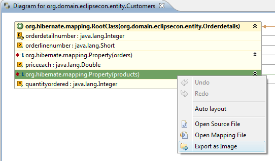
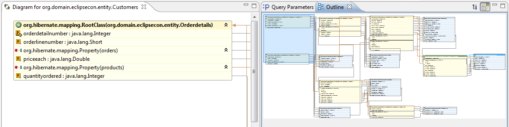
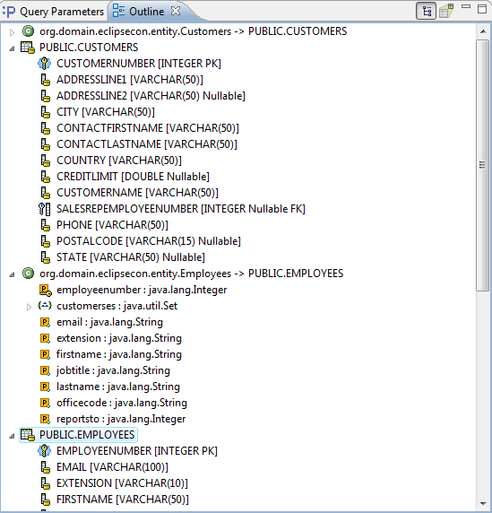
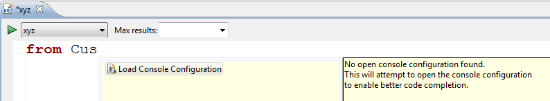
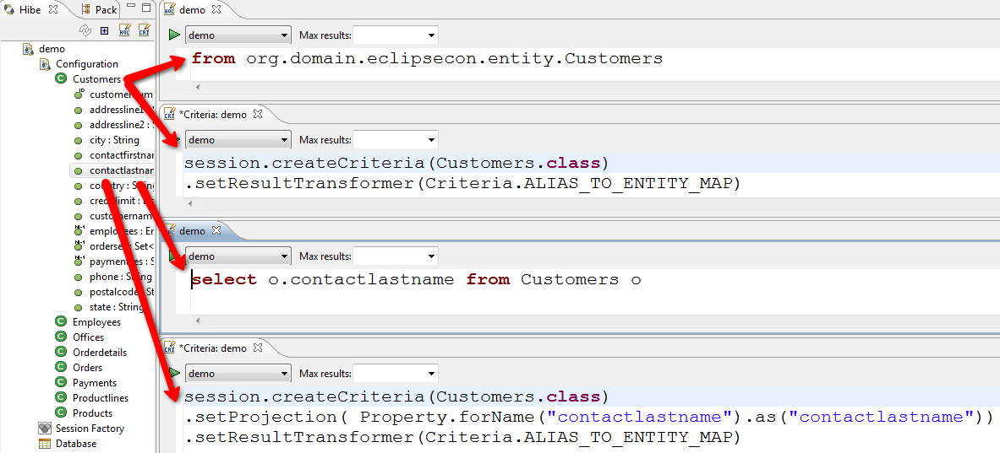
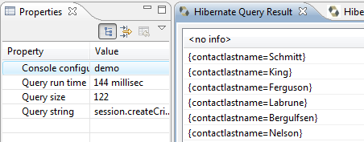
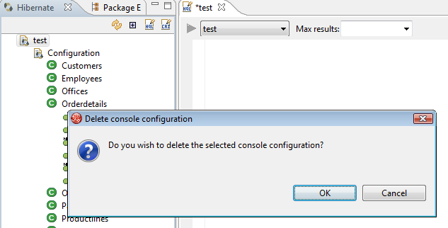

Mapping Diagram
You can now right click the Mapping diagram and get it exported as .png, .jpeg or .bmp.

Undo and redo and auto layout is now avaialable via right click on the diagram - allowing you to adjust manually or automatically with undo support.

The diagram now supports both a graphical and structural outline enabling easier direct navigation of the diagram.


Query prototyping


We also ensured that the correct console configuration is selected in the query/criteria editor based on the current selection and in case no console configuration is present or the query string is empty the Run query button is disabled.
The properties view now includes information about the number results in the query and how long the query took to execute.

We already had the option of using Ctrl+1 to get a portion of the java editor copied to the HQL and Criteria editor for query prototyping, but you had to manually copy the changes you made back to the java file you started from.
Now we provide the option when you save a HQL or Criteria to update the original Java code.
Configuration
When creating/editing a Hibernate Console Configuration you can know create an .cfg.xml or properties file directly from the wizard instead of having an preexisting file.

